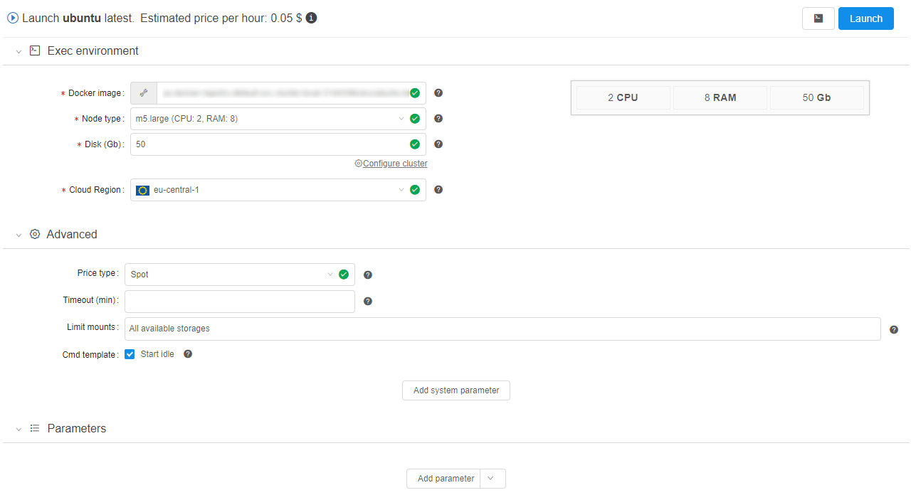
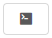
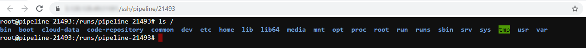
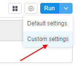
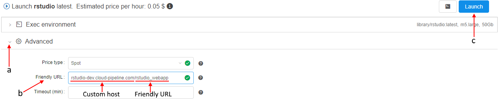
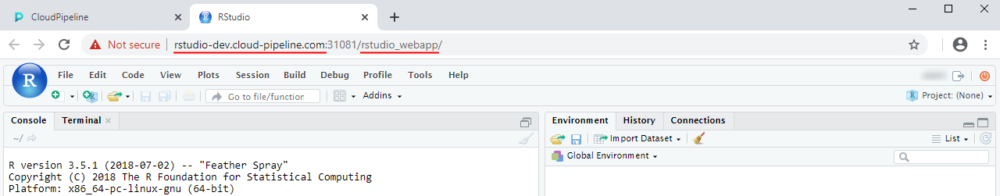

10.5. Launch a Tool
- Launch the latest version
- Launch particular Tool version
- Launch a Tool with "friendly" URL
- Instance management
To launch a Tool you need to have EXECUTE permissions for it. For more information see 13. Permissions.
You also can launch a tool via CLI. See here.
Launch the latest version
- To run an instance with a selected Tool navigate to the Tools tab and click the Tool name.
- Click the Run button in the top-right corner of the screen and the latest version with default settings will be launched (these are defined for Cloud Pipeline globally).
- If you want to change settings, you shall click the arrow near the Run button → Custom settings.

- Launch tool page will be opened.
 -
If the Price type is set as "On-demand" - at the Launch page, an additional checkbox Auto pause appears:
This checkbox allows to enable automatic pausing on-demand instance if it is not used. Such behavior could be controlled by Administrators using a set of parameters at System Preferences (see here).Please note, this checkbox will not be displayed if any cluster is configured ("Static" or "Autoscaled").
-
If the Price type is set as "On-demand" - at the Launch page, an additional control Maintenance appears. It allows to configure schedule for automatical pause/resume a tool run:

It could be useful when the tool is launched for a long time (several days/weeks) but it shall not stand idle, just increasing costs, in weekends and holidays, for example.
For more details, how to configure the automatically schedule for a run see 6.2. Launch a pipeline (item 5).Please note, the Maintenance control will not be displayed if any cluster is configured ("Static" or "Autoscaled").
Users (who have permissions to pause/resume a run) can create/view/modify/delete schedule rules anytime launched run is active via the Run logs page - for more details see 11. Manage runs.
-
Define the parameters in the Exec environment, Advanced and Parameters sections.
-
Click the Launch button in the top-right corner of the screen.
Please note, that the current user can launch a tool only if he/his group has corresponding permissions on that tool (for more information see 13. Permissions), but the Launch button may be disabled also for one of the following reasons:executionisn't allowed for specified docker image;readoperations aren't allowed for specified input or common path parameters;writeoperations aren't allowed for specified output path parameters.
In such cases, hover over the Launch button to view warning notification with a reason of a run forbiddance, e.g.:

Note: you can also launch a tool with the same settings via the
CLIcommand orAPIrequest.
To generate the corresponding command/request click the button  near the "Launch" button. For more details see here.
Launch particular Tool version
- To run a particular version click the Versions section.
- Select a version and click the Run button. The selected version with default settings will be launched (these are defined for Cloud Pipeline globally).
- If you want to change settings, you shall click the arrow near the Run button → Custom settings.
- Launch a tool page will be opened.
- Define the parameters.
- Click the "Launch" button.
Example 1
In this example, we will run the "Ubuntu" Tool with custom settings: 30 Gb hard drive, 4 CPU cores, and 16 Gb RAM.
Note: "Start idle" box is ticked to allow SSH access to the running Tool. To learn more about interactive services see 15. Interactive services.
Click the Launch button in the top-right corner of the screen when all parameters are set.

After the Tool is launched you will be redirected to the Runs tab:
- Click the Log button to see run details after instance finishes initialization.

- Wait until the SSH button will appear at the Run logs page, click it

- You will be redirected to the page with interactive shell session inside the Docker container. For example, we can list "/" directory content inside the container.

Launch a Tool with "friendly" URL
User can specify a "friendly"-format endpoint URL for persistent services. This produces the endpoint URL for the selected interactive service in a more friendly/descriptive format instead of the default general <host>/pipeline-<RunID>-<port>.
"Friendly" format can be configured before the specific service launch in the "Advanced" section of the Launch page.
This format has the following structure - <custom-host>/<friendly_url>, where:
<custom-host>- valid existing domain name. If it's not specified, the default host name will be used<friendly_url>- valid endpoint name. If it's not specified but the<custom-host>is specified - the final endpoint URL will be equal the<custom-host>only
Note: specified endpoint URL shall be unique among all active runs.
Example 2
In this example we will configure a pretty URL for RStudio Tool.
Note: for do that, user account shall be registered within CP users catalog and granted READ & EXECUTE permissions for the rstudio Tool.
- Navigate to the Tools tab.
- Select/find RStudio Tool in the list:
- At the opened page hover the "Run" button and click the appeared "Custom settings" point:
 - Click the "Advanced" control (a), input desired "Friendly URL" (b) (name shall be unique) and then click the "Launch" button (c), e.g.:
 - Open the Run logs page of RStudio Tool, wait until the tool successfully starts.
- Click the hyperlink opposite "Endpoint" label:

- In a new tab RStudio will be opened. Check that the URL is in the "pretty" format you specified at step 4:

Instance management
Instance management allows to set restrictions on instance types and price types for tool runs.
User shall have ROLE_ADMIN or to be an OWNER of the Tool to launch Instance management panel. For more information see 13. Permissions.
To open Instance management panel:
- Click button in the left upper corner of the main tool page.
- Click "Instance management":
- Such panel will be shown:
On this panel you can specify some restrictions on allowed instance types and price types for launching tool.
Here you can specify:
| Field | Description | Example |
|---|---|---|
| Allowed tool instance types mask | This mask restrict for a tool allowed instance types. | If you want for that tool only some of "large m5..." instances types will be able, mask would be m5*.large* In that case, before launching tool, dropdown list of available node types will be look like this:  |
| Allowed price types | In this field you may restrict, what price types will be allowed for a user. | If you want "On-demand" runs only for that tool will be able, select it in the dropdown list: In that case, before launching tool, dropdown list of price types will be look like this: |
To apply set restrictions for a tool click button.
Setting restrictions on allowed instance types/price types is a convenient way to minimize a number of invalid configurations runs.
Such restrictions could be set not only for a tool, but on another levels too.
In CP platform next hierarchy is set for applying of inputted allowed instance types (sorted by priority):
- User level (specified for a user on "User management" tab) (see v.0.14 - 12.4. Edit/delete a user)
- User group level (specified for a group (role) on "User management" tab. If a user is a member of several groups - list of allowed instances will be summarized across all the groups) (see v.0.14 - 12.6. Edit a group/role)
- Tool level (specified for a tool on "Instance management" panel) (see above)
- (global)
cluster.allowed.instance.types.docker(specified on "Cluster" tab in "Preferences" section of system-level settings) (see v.0.14 - 12.10. Manage system-level settings) - (global)
cluster.allowed.instance.types(specified on "Cluster" tab in "Preferences" section of system-level settings) (see v.0.14 - 12.10. Manage system-level settings)